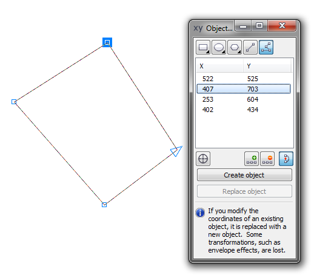

Координаты точек в CorelX5
desmana / 14.02.2011, 15:06/00:41
Форум:
Скажите - есть ли какие-либо функции или макросы для записи координат точек?
Проблема: есть рисунок объекта, нужно описать его форму системой точек. Здесь возникает проблема: как поставить эти точки? и как получить координаты этих точек?
В рукопашнуюю это сделать легко, но очень трудоемко - "садишь" объект на print_borders, и курсором считываешь координаты по абсцисс и ординат.
Может быть кто-нибудь может подсказать? Есть ли такие функции в других программах?
Докер Object Coordinates

Спасибо! Уже второй раз пользуюсь Вашим советом (первый - по расчету площади полигонов)!
А нельзя ли как-то эти колонки в буфер запасти? Очень надо...
desmana, вряд ли. А вот если написать макрос тогда точно можно, причём сразу можно записать значения в текстовый файл.
А Вы можете написать макрос? Что для этого нужно?
desmana, могу но не буду — просто некогда. Попробуй обратиться к пользователю под ником shark, возможно он поможет.
спасибо!